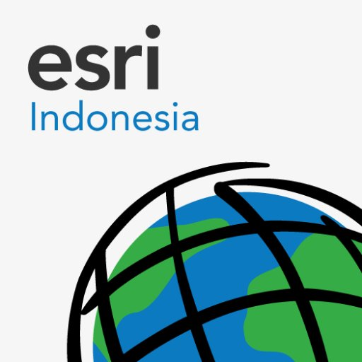

- Skills
-
 GIS Software/Web:
ArcGIS Desktop 10.3-10.7, ArcGIS Pro, ArcGIS Online, QGIS, PostGIS, Leaflet.
GIS Software/Web:
ArcGIS Desktop 10.3-10.7, ArcGIS Pro, ArcGIS Online, QGIS, PostGIS, Leaflet.
-
 Programming:
HTML/CSS, JavaScript (Beginner, focus on leaflet), R, SQL
Programming:
HTML/CSS, JavaScript (Beginner, focus on leaflet), R, SQL
-
Remote Sensing Software: Agisoft Metashape Professional, eCognition Developer 9.01, ENVI
-
Surveying Software: Leica Geo Office, DroneDeploy, Avenza Maps
- Professional Experience
-
 Assistant Lecturer of Geographic Information System
(September 2021-January 2022)
Assistant Lecturer of Geographic Information System
(September 2021-January 2022)
Departemen of Geography Education, Universitas Pendidikan Indonesia
Bandung City, West Java- Managed GIS practices class
- Checked and assessed 47 student tasks
- Created 47 student final grade reports
-
 GIS Analyst Intern
(September 2021-November 2021)
GIS Analyst Intern
(September 2021-November 2021)
Seksi Penataan dan Pemberdayaan, Kantor Pertanahan Kabupaten Bandung
Bandung Regency, West Java- Regional Mapping Survey
- Created maps of land technical considerations for kesesuaian kegiatan pemanfaatan ruang (KKPR)
- Created maps of Neraca Penatagunaan Tanah as a database for spatial planning analysis
-
 Student Fellowship (June 2021-July 2022)
PT Esri Indonesia
South Jakarta, DKI Jakarta- Field survey and online survey for final project data acquisition
- Final Project: Mapping the volume of domestic waste in Bojonegara Development Region, Bandung City (2021, 2026, & 2031)
-
Assistant Lecturer of Cartography
(September 2019-January 2020)
Departemen of Geography Education, Universitas Pendidikan Indonesia
Bandung City, West Java- Managed Digital and Manual Cartography Practices Class
- Checked and assessed 49 student tasks
- Created 49 student final grade reports